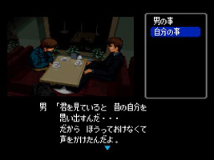

Famicom Tantei Club Part II: Ushiro ni Tatsu Shoujo
Information | Alt. Versions | Trivia | Cameo Appearances
|  |
System: Super Famicom / SNES Releases: Related Pages: |
Game © 1998 Nintendo
Information
Remake of the Famicom Disk System sequel - and released on the month of the 10th anniversary of the original Famicom Tantei Club.
This edition is much the same as the original - you control the actions and questions of Anata, a young boy who is now a member of the Tantei Club. Investigating a murder by the river, your job is to talk to people who knew her, as well as possible witnesses, and investigate the scenes. You will also be joined by Ayumi who will help you to solve the case.
You control the action from text boxes at the bottom and side of the screen, while the action is illustrated through a window on the top left of the screen. It is the contents of this window that make up the biggest change in the game. The music and graphics have been updated, giving a deeper sense of atmosphere and emotion to the scenes and characters.
Alternate Versions
- Remake of Famicom Tantei Club Part II: Ushiro ni Tatsu Shoujo (FC Disk 1989).
Trivia
- Japanese Title Translation: Famicom Detective Club Part II: The Girl who Stands at the Back
Cameo Appearances
Disk System Intro
This is a remake of a Famicom Disk System game... it even has a spoof mock-up of the Famicom Disk System loading screen! Mario and Luigi run on and hit the lights (like when you switch the Disk System on without a disk inside), then you get a disclaimer about Nintendo Power (spoofing the Disk System's disclaimer), and finally the old-style title screen and music appear and transform into the updated title screen.
{kind=link}
{kind=link}
{kind=link}